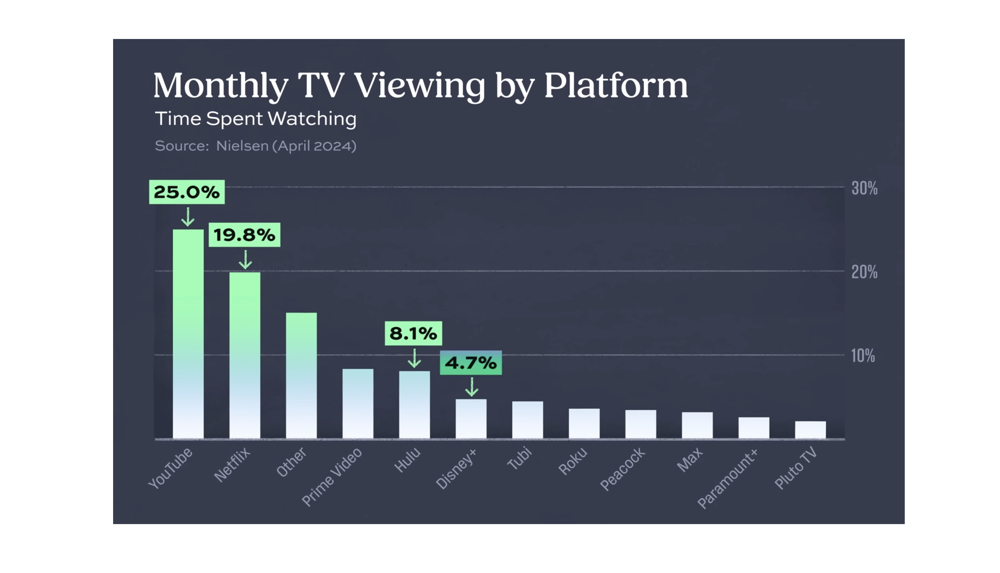

In today’s digital age, video content has become the most powerful medium for engaging audiences. With over 500 hours of video uploaded to YouTube every minute and more than 2.5 billion monthly active users, YouTube is at the forefront of this revolution. Video consumption continues to soar, with users watching over a billion hours of content on the platform daily. This massive appetite for video provides an unparalleled opportunity for content creators, particularly in the sports niche, to connect with audiences and build profitable ventures.
Profiting Through the Creator Economy
One of the most significant aspects of YouTube’s growth has been the rise of the creator economy. YouTube has paid out over $70 billion to creators in the past three years alone. Notably, around 50% of micro and nano influencers on YouTube, those with smaller but highly engaged followings, are earning more than $1,000 per month. This indicates that even creators with modest audiences can find significant financial success on the platform.
For sports content creators, this presents a lucrative opportunity. Whether through sports highlights, personal commentary, or in-depth analysis, YouTube allows creators to build deep connections with fans, fostering communities around their favorite sports and athletes.
Image created by AI using DALLE.
The Unique Opportunity in Sports Content
Sports have always been a major part of YouTube’s offering
The platform has evolved from hosting simple highlight reels to airing major events like the NFL Sunday Ticket, blending professional sports broadcasting with creator-driven content. This unique mix makes YouTube a prime destination for sports enthusiasts.
For creators, this means a vast, engaged audience eager for well-crafted sports content
The rise of features like Shorts, which now generate 70 billion daily views, has further amplified the demand for quick, impactful sports videos. This environment creates a strong need for both creators and audiences to engage with sports content in innovative ways.
Flexible creator tools empower the next generation of sports creators
While YouTube provides the platform, tools like SportsBuddy Studio are essential for helping creators unlock their full potential. Designed to simplify the video creation process, SportsBuddy Studio enables sports enthusiasts to produce engaging, professional-quality sports videos with ease.
Whether you’re a seasoned creator or just starting, SportsBuddy Studio offers intuitive features that allow you to focus on what matters most: storytelling.
As the demand for high-quality sports content continues to grow, tools like SportsBuddy Studio are vital for standing out in a crowded market and turning your passion into profit.
Looking Ahead: Embrace the Power of Video Storytelling
As we look to the future, video storytelling, particularly in sports, will continue to play a pivotal role in the digital content landscape. YouTube’s ongoing support for creators, combined with powerful tools like SportsBuddy Studio, makes now the perfect time to dive into sports content creation.


So, whether you’re sharing insights on the latest game or creating a highlight reel that captures the thrill of victory, remember that the world is watching. To see how others have successfully harnessed these opportunities, explore our successful sports influencer case study.
With the right tools and a dash of creativity, you can turn your passion for sports into a thriving channel that not only captivates audiences but also generates income.